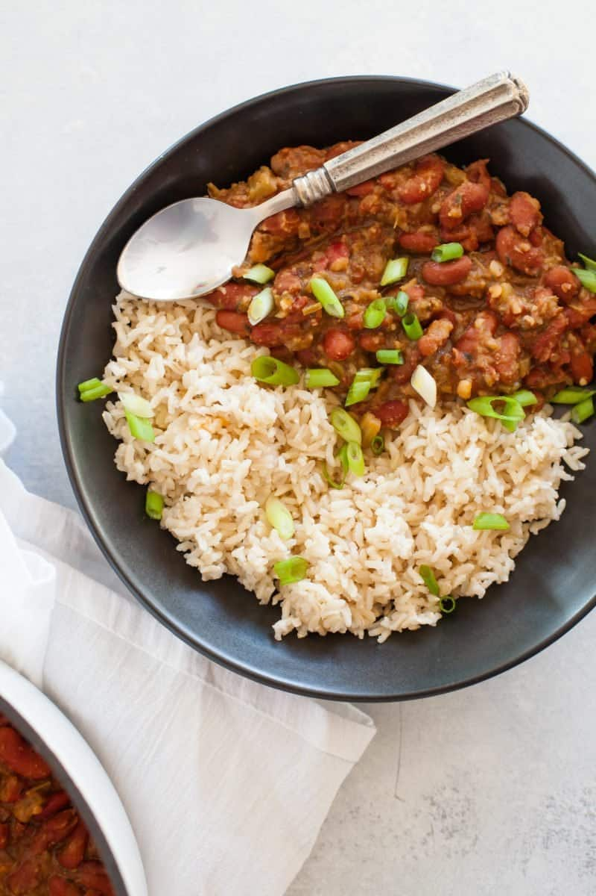

Rice and Beans

- Turn on the sauté setting of a 6- to 8-quart electric pressure cooker and heat the oil. Add the onion, season with salt, and cook, stirring occasionally, until limp and translucent, 6 to 8 minutes. Add the celery and bell pepper, and cook, stirring occasionally, until softened, 5 to 8 minutes. Add the chopped garlic, miso paste, smoked paprika, sweet paprika, onion powder, garlic powder, cayenne and sage (if using). Grind in a generous amount of black pepper and add 3/4 teaspoon salt. Stir well to combine all the ingredients, then turn off the sauté setting.
- Add the beans, bay leaves, thyme and 5 1/2 cups water. Scrape the bottom of the pot to loosen any browned bits. Cook on high pressure until the beans are creamy, 50 minutes to 1 hour.
- Turn off the pressure cooker and allow the pressure to reduce naturally for 10 minutes, then release the remaining pressure manually and open the lid. Add the soy sauce, and season to taste with salt and cayenne. Using a fork, mash some of the beans against the side of the pressure cooker to make the mixture creamy. It will continue to thicken as it sits, or you can turn on the sauté setting and let the mixture bubble for a few minutes to thicken. Discard the bay leaves and thyme sprigs. Top the beans with hot cooked rice and scallions; serve with hot sauce.